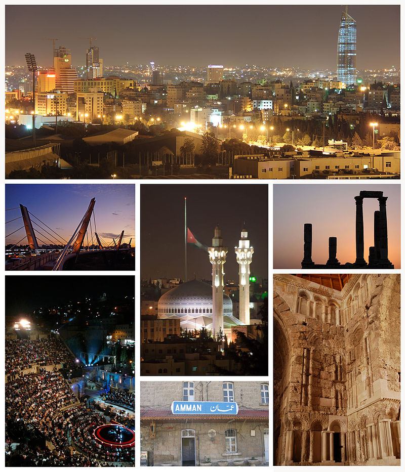

Amman
DescriptionAmman, the capital of Jordan, is a modern city with numerous ancient ruins. Atop Jabal al-Qala’a hill, the historic Citadel includes the pillars of the Roman Temple of Hercules and the 8th-century Umayyad Palace complex, known for its grand dome. Built into a different downtown hillside, the Roman Theater is a 6,000-capacity, 2nd-century stone amphitheater offering occasional events.